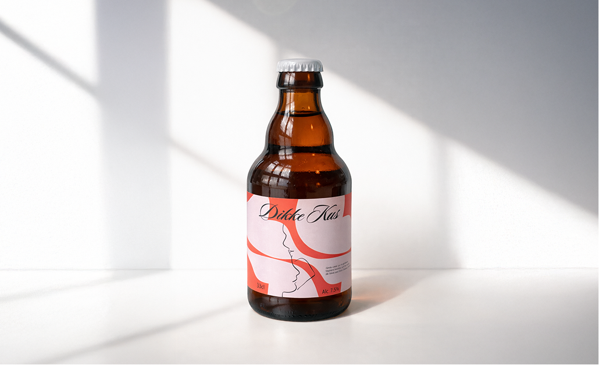

Dikke Kus is a specialty beer built around a personal and emotional story. The beer was created by a father in memory of his daughter. The name "Dikke Kus" refers to the loving goodbyes. For this project, I designed the label with the goal of finding a balance between warmth, love, and a visual style that fits a specialty beer.

The biggest challenge within this project was translating a deeply personal storyline into a label identity that:
The final result is a beer label that represents not only a product, but also a story. The design contributes to the brand experience and strengthens the emotional meaning behind the beer.